计算机视觉 · 第 1 章 绪论
1.4 计算机视觉应用
前面几节讲的是概念、历史和研究方向，这一节看落地：计算机视觉已经在哪些场景里真正用起来了。课件的取舍很有代表性——从人脸识别出发，依次覆盖智能交通、机器人、娱乐四个方向，最后用「深度伪造」收尾，提醒一件事：技术是中性的，能用来做好事，也能用来作恶。
1. 人脸识别
人脸识别是计算机视觉里落地最广的技术。课件的这张图把它归纳为六大应用场景：
| 应用场景 | 具体内容 |
|---|---|
| 安全防盗 | 移动设备的访问认证，车辆访问，电脑接入等 |
| 门禁管理 | 智能卡用户验证，比出入者与库存人脸数据信息 |
| 社会监控 | 公园活动监控，街道监控，电网监控，入口管理监控等 |
| 安全交易 | 金融交易人脸验证，确认交易人身份 |
| 刑事侦查 | 安全反恐报警，智能视频分析搜索，快速查找疑似嫌犯 |
| 身份识别认证 | 人脸驾照验证，签证验证，身份证验证，护照验证等 |
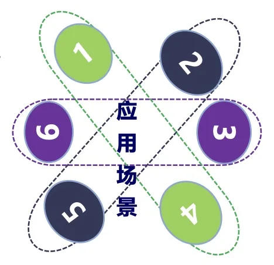
把这张表读一遍会发现，六个场景对技术的要求并不一样：门禁与身份认证是「配合式」的——人站在设备前，光照、角度相对可控；而社会监控与刑事侦查是「非配合式」的——目标在移动、姿态和光照都不受控，难度要高得多。
下面是两类典型形态：人脸闸机用于人员通行，安防布控与预警则把摄像头采集到的人脸与后台数据库比对。
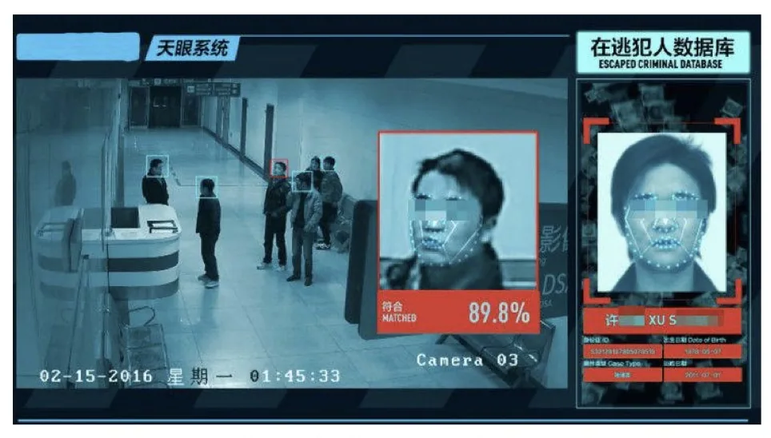
2. 智能交通
交通是视觉技术密度最高的行业之一，因为这里的核心问题——「路上有什么、在往哪儿走」——天然就是视觉问题。课件给出了三个层次的例子。
智能交通监控处理的是已经拍到的视频：识别车辆、统计流量、发现违章。它是交通管理的「眼睛」。
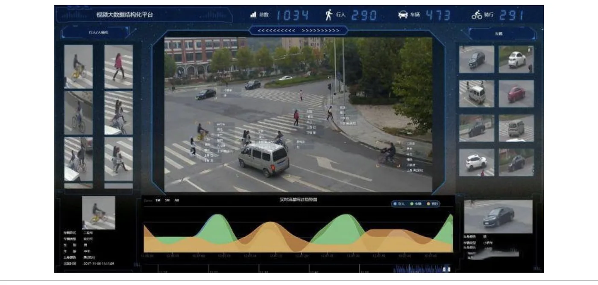
无人驾驶对视觉的要求又高一层——它不只是「看清」，还要在几十毫秒内基于看清的结果做决策。车辆通常配有多个摄像头（课件图中标注了左后视与中距摄像头等不同视角），共同构成对周围环境的三维感知。
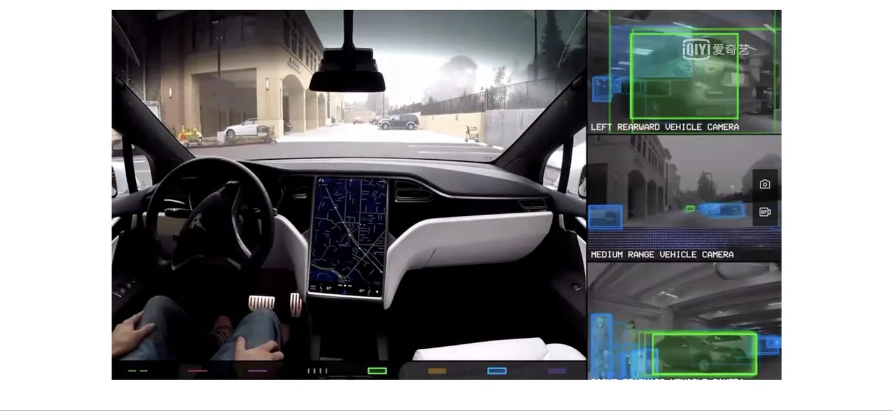
智能停车场与智能泊车则是把视觉用在更具体的动作上：识别车牌完成无感通行与计费，或者辅助车辆自动完成入库入位。
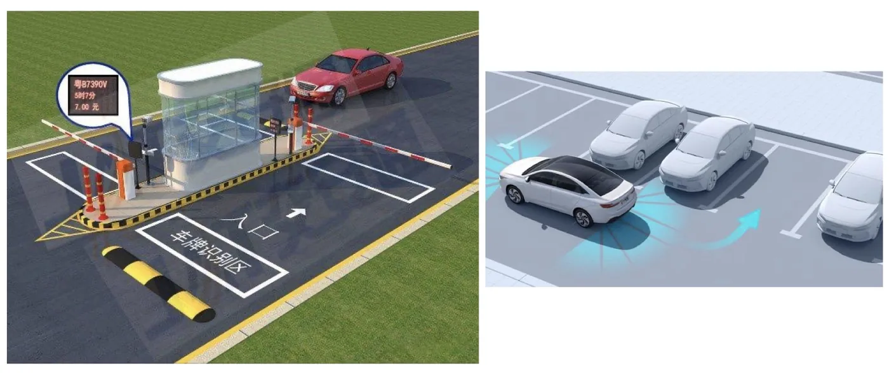
3. 机器人
机器人是计算机视觉最「具身」的应用方向——视觉在这里不只是输出一个结果，而是直接驱动机械臂和底盘去动作。课件按场景列举了几类。
垃圾分类：用视觉识别传送带上的垃圾类别，再由机械结构完成分拣。这类任务的特点是目标形变大、类别多，但工作环境相对固定。
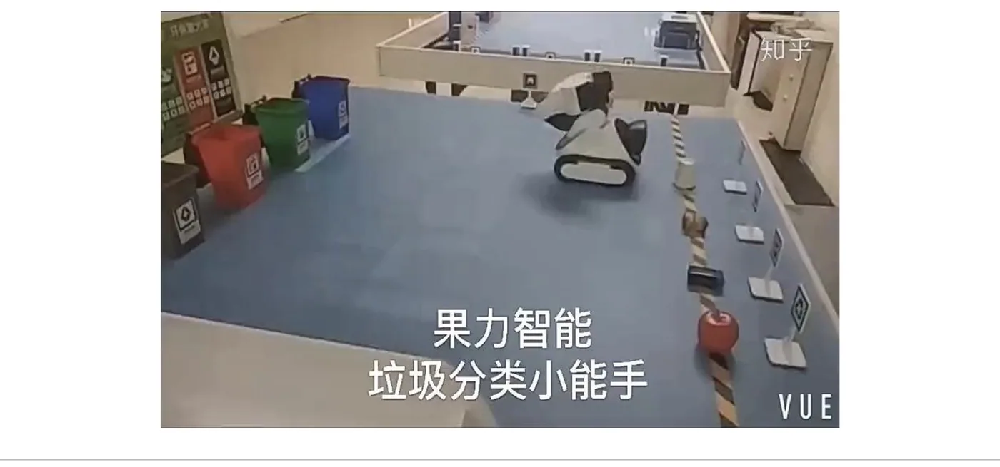
物流机器人：在仓库和分拣中心里搬运、拣选包裹。它要求视觉与定位、路径规划紧密配合——先看清「货在哪里」，再决定「怎么过去」。
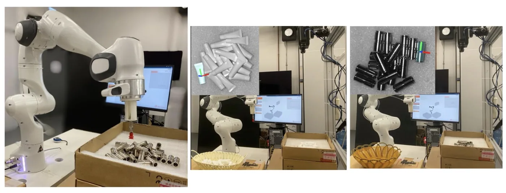
波士顿动力机器人：这类研究把视觉能力与高动态的运动控制结合在一起。课件提到，波士顿动力公司于 2023 年 1 月 18 日发布了其仿人机器人 Atlas 的最新演示——它能完成跑酷、翻腾这类高难度动作，靠的正是对地形和自身姿态的实时感知。
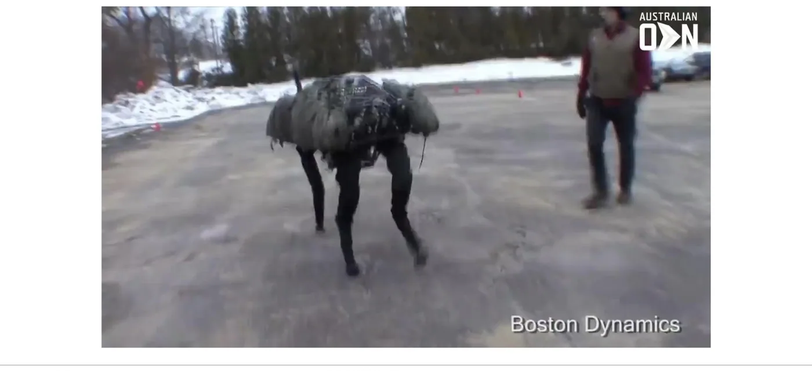
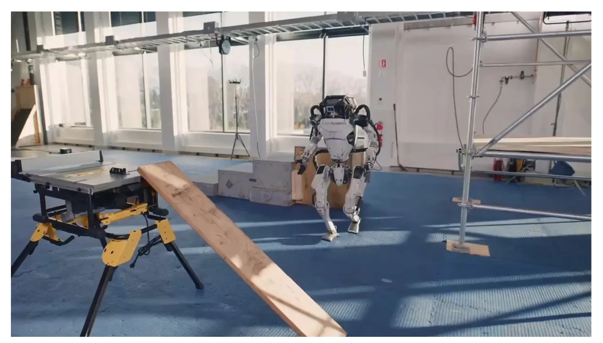
人形机器人：把人形结构作为通用平台，让它能在为人类设计的环境中作业。课件给出了 2025 世界人形机器人运动会等近期活动作为例子。
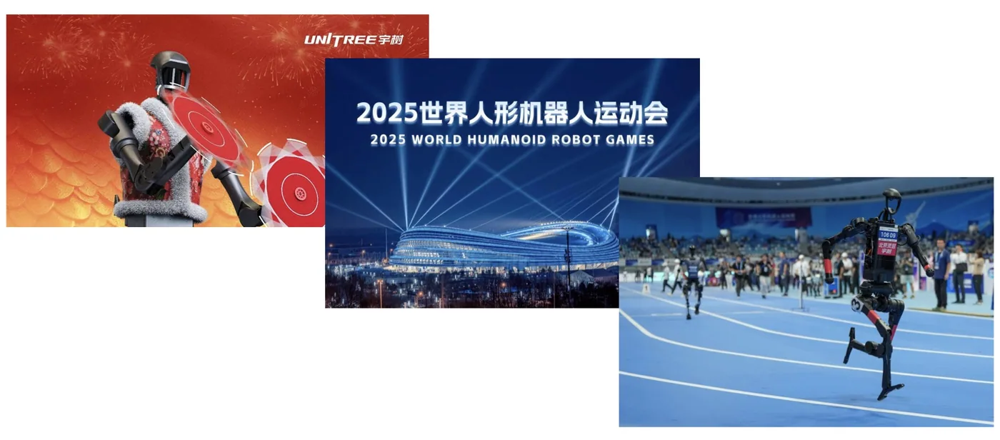
4. 娱乐领域
娱乐是视觉技术传播最快、用户感知最直接的领域。短视频里的各种特效——滤镜、贴纸、变身、跟拍——背后几乎都是实时的人脸检测与关键点定位。
5. 深度伪造：有图未必有真相
同一套技术用在另一处，就是本节最需要警惕的部分。
深度伪造（Deepfake）是深度学习（deep learning）和伪造（fake）的组合词。它利用深度学习技术训练大规模的数据，包括人脸图像、语音以及视频等；这些数据用于模仿和学习不同人的特征、动作和声音。然后，再利用 AI 技术创建虚假内容，包括假的图像、声音和视频，从而实现 AI 换脸或语音复制等功能。
课件给出了三种典型玩法：
- 把表情应用到一张照片上：捕捉摄像头前人物的表情变化，包括嘴唇、眼睛、眉毛等，并将这些表情反映到照片中的另一个人的脸上；
- 用语音生成表情：根据录制或实时的语音输入，生成照片内的人的脸部表情和头部动作，并将照片转换为视频，看起来就像照片内的人在说使用者输入的声音；
- 把脸替换成照片里的人脸：把照片上的人脸「套」在镜头前的人脸上。课件举的开源项目例子是 Deep-Live-Cam（https://github.com/hacksider/Deep-Live-Cam）。
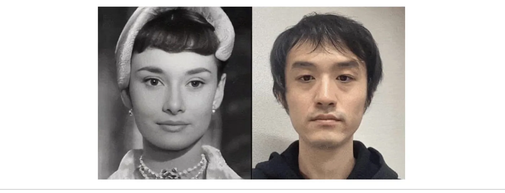
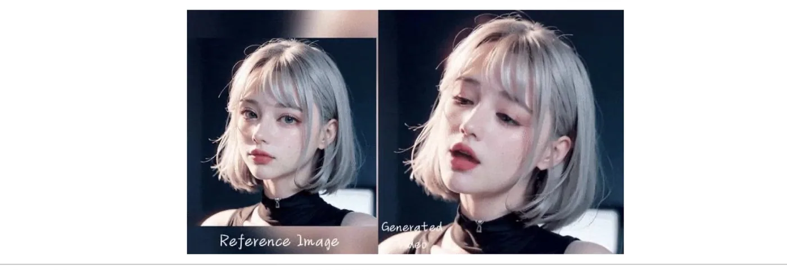
技术一旦可以被这样使用，代价就是「有图未必有真相」：视频和语音这类历来被当作证据的东西，从此都需要怀疑。课件因此专门用一页提醒警惕 AI 换脸诈骗——冒充熟人视频通话、伪造身份通过活体验证，都已经是现实中发生过的骗局。
6. 技术的边界
在列举了这么多应用之后，课件把调子收了回来：很多技术仍处于研究阶段，尚存在很多限制和不足。
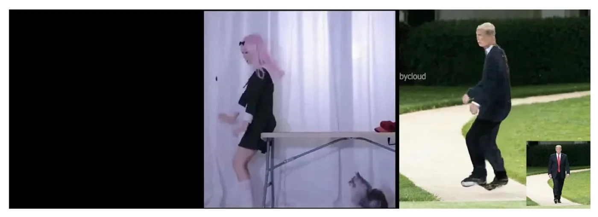
这句话有两层意思。一层是技术层面的：换个光照、换个角度、换个场景，模型的表现可能就掉下来；另一层是治理层面的：一项既能用于安防、又能用于诈骗的技术，需要法律和伦理的约束才能发挥正向价值。前面介绍过的「博弈与伦理」，正是在这个意义上成为人工智能六大研究领域之一。
本节小结
- 人脸识别有六大应用场景：安全防盗、门禁管理、社会监控、安全交易、刑事侦查、身份识别认证；其中门禁与身份认证是配合式的，社会监控与刑事侦查是非配合式的，后者难度更高。
- 智能交通包含三个层次：交通监控（识别与结构化）、无人驾驶（多相机实时感知并决策）、智能停车场与智能泊车（车牌识别与自动泊车）。
- 机器人在垃圾分类、物流搬运、波士顿动力（Atlas，2023 年 1 月 18 日发布最新演示）与人形机器人等场景中落地，视觉在此直接驱动物理动作。娱乐领域则以实时人脸特效为代表。
- 深度伪造（Deepfake）＝深度学习＋伪造：它的三种典型形态是表情迁移、语音驱动静态照片、实时换脸；后果是「有图未必有真相」，课件专门提醒警惕 AI 换脸诈骗。
- 课件最后强调：很多技术仍处于研究阶段，尚存在很多限制和不足——既有技术上的泛化问题，也有法律与伦理上的治理问题。